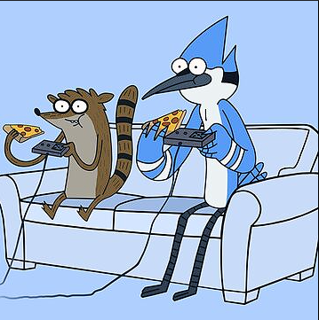
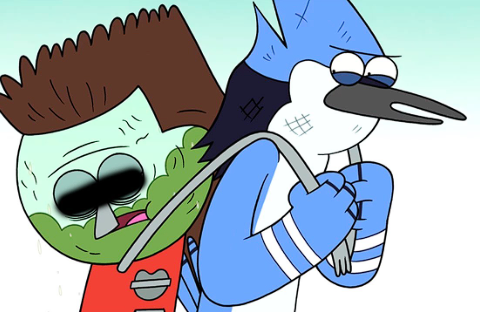
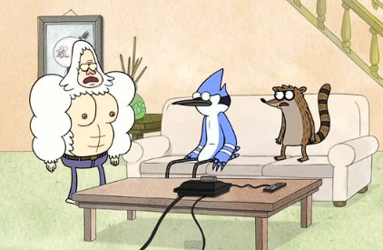
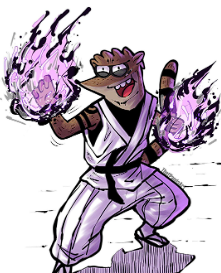
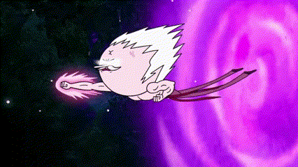
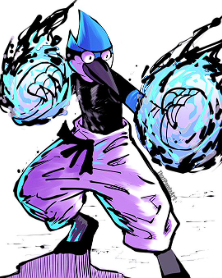
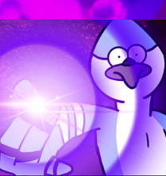

*um dia normal acontecendo...
-Rigby: “wooooo, esse video game é muito legal.
-Mordecai: “é mesmo, mais legal ainda é ganhar de você sem nem mesmo se esforçar, hehehe”.
-Rigby: “ma-MAS EU TAMBÉM NÃO TO ME ESFORÇANDO, TO DEIXANDO VOCÊ GANHAR.”
-Mordecai: “então joga sério ai, mané, hehe.”
Rigby joga muito sério mas perde feio*
-Rigby: “AHGGR QUE JOGO MAL FEITO”
Mordecai-”não é o jogo, você que manda mal.”
Rigby soca o Mordecai e o mesmo revida*
-Benson: “parem de brigar e façam suas tarefas ou estarão DEMITIDOS!!! ”.
Mordecai e Rigby varrem, limpam e arrumam a casa.
Rigby não aceitou mais uma derrota e assim como Tazmania rodopiou de raiva se entrelaçou no cabo do
controle e derrubou o video game no chão.
Vocês chegam até o porão, vê um album de fotos de quando o Musculoso era fisiculturista mas Benson
chega e
expulsa vocês dois.
Mordecai e Rigby pegam as ferramentas mas assim que Benson sai, tem uma ideia, qual escolher?
Vocês se divertem muito mas Rigby o imprudente numa
forma de se vingar de Benson da um pedaço do
sanduiche mortal, o mesmo come e fica muito muito mal
Rigby faz o código proíbido no controle que apaga a luz do “mundo” por 1 segundo e nesse feixe o mesmo
some
A luz ficou oscilando e ele só tinha caido no pequeno vão do sofá puxando o cabo de energia que por
“coincidência” deu um pequeno curto circuito e desligou a luz da casa mas pifou o video game (ele errou
parcialmente o código)
Saltitão resolve o problema mas Rigby o imprudente faz o
código proíbido no vídeo game e desliga a energia mundial por 1 segundo e o mesmo nesse feixe some
Dessa vez i. Rigby não estava no vão do Sofá
Rigby i. não atende ao chamado...
-Mordecai: “é ta bem sujo de salgadinho e gordura, mas preciso tentar esse código no controle dele, por
algum motivo no player 1 não funciona...”
Mordecai O Sábio entrou no server*
Mordecai O Sábio: “RIGBY?, o que faz sentado neste trono em volta dessas torres, ah é um castelo,
maneiro mas o QUE VOCÊ FEZ?”
-Rigby O imprudente: “o que eu fiz Mordecai?, hm apenas nivelei o jogo, não aguentava mais perder, agora
tenho o poder máximo de todos os jogos”
-Mordecai O Sábio:”não, o Rigby de verdade não ligaria pra tanto poder, eu não vou te enfrentar”
-Rigby:”AH VOCÊ VAI, ESPEREI MUITO TEMPO PRA ISSO, ATAQUEM ELE MEU EXERCITO HAHAHAHA”
-Rigby O Imprudente: O seu erro foi achar que usando
apenas um sentido iria me derrotar, o MordeCAI, olha aqui
*RIGBY O IMPRUDENTE ACERTA NAS COSTAS UM COVARDE GOLPE , DESMAIA MORDECAI JOGA NO MEIO DE SEU EXERCITO E
DERROTA NOSSO SÁBIO.

...
-Mordecai O Sábio fecha os olhos e: “entre o vídeo
game e a terra eu sou o mais honrado.
 *todo exercito é dizimado
-Rigby O Imprudente:”AHHH MORDECAAAAAI”
*Mordecai de olhos fechados esquiva do potente soco de Rigby, vai atrás e acerta um vazio do soco na parte
esquerda de seu traseiro que é torto.
*Rigby é derrotado.
-Mordecai:”vou te levar pra casa amigo.”
*todos voltaram felizes menos Rigby que teve que fazer a tarefa de todos os seus amigos por 1 mês.